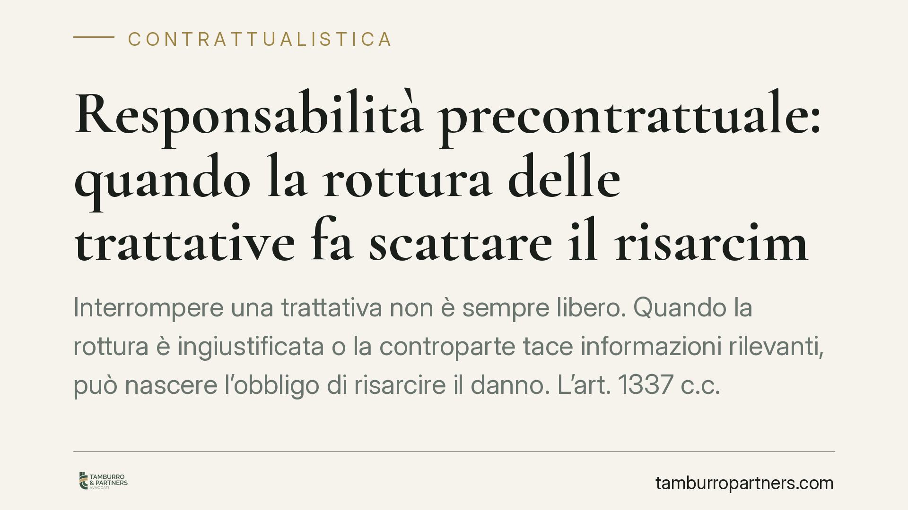

Responsabilità precontrattuale: quando la rottura delle trattative fa scattare il risarcimento
Interrompere una trattativa non è sempre libero. Quando la rottura è ingiustificata o la controparte tace informazioni rilevanti, può nascere l'obbligo di risarcire il danno. L'art. 1337 c.c. impone di comportarsi secondo buona fede già prima della firma. Vediamo quando la responsabilità precontrattuale diventa concreta e cosa può pretendere chi subisce il pregiudizio.

Il fatto giuridico: la buona fede prima del contratto
Molti ritengono che, finché non c'è la firma, ogni parte resti libera di fare ciò che vuole. Non è così. Il nostro ordinamento tutela anche la fase delle trattative, cioè quel periodo in cui i futuri contraenti discutono, formulano proposte e verificano la convenienza dell'accordo.
La tutela nasce dal principio di buona fede, che accompagna il rapporto dalla prima interlocuzione fino all'esecuzione. Chi viola questo dovere può essere chiamato a risarcire il danno, anche se il contratto non è mai stato concluso.
Inquadramento normativo
La norma cardine è l'art. 1337 c.c.: nello svolgimento delle trattative e nella formazione del contratto, le parti devono comportarsi secondo buona fede. Si parla in questi casi di responsabilità precontrattuale (o *culpa in contrahendo*, cioè la colpa nel contrattare).
Questo obbligo si collega ad altre disposizioni che presidiano la correttezza dei rapporti: l'art. 1366 c.c. sull'interpretazione secondo buona fede, l'art. 1375 c.c. sull'esecuzione secondo buona fede e l'art. 1358 c.c. sul comportamento durante la pendenza della condizione.
Due norme specifiche completano il quadro. L'art. 1338 c.c. obbliga chi conosce (o dovrebbe conoscere) una causa di invalidità del contratto a informarne l'altra parte: il silenzio genera l'obbligo di risarcire chi ha confidato senza colpa nella validità dell'accordo. L'art. 1440 c.c. riguarda invece il dolo incidente: quando i raggiri non hanno determinato il consenso ma hanno portato a condizioni più svantaggiose, il contratto resta valido, ma chi ha ingannato risponde dei danni.
La Cassazione Civile ha chiarito nel tempo i presupposti: serve che le trattative siano giunte a uno stadio tale da ingenerare un ragionevole affidamento sulla conclusione del contratto, che la rottura sia priva di giustificazione e che il danno sia conseguenza diretta di tale condotta.
Quando scatta davvero il risarcimento
Non ogni interruzione è illecita. La responsabilità presuppone tre elementi concorrenti.
Primo: un affidamento ragionevole. Le trattative devono essere avanzate al punto da far ritenere probabile l'accordo. Un semplice contatto esplorativo non basta.
Secondo: l'assenza di una giusta causa di recesso. Chi si ritira per una ragione seria e sopravvenuta non risponde. Chi abbandona per capriccio o dopo aver tenuto artificiosamente in vita la trattativa, sì.
Terzo: il danno. Qui la voce risarcibile è particolare: si parla di *interesse negativo*, cioè il pregiudizio derivante dall'aver confidato invano nella conclusione del contratto. Comprende le spese sostenute e le occasioni alternative perse, ma non il guadagno che si sarebbe ottenuto dal contratto mai concluso.
Implicazioni pratiche
Per chi conduce trattative commerciali, il messaggio è netto: la libertà di non concludere non equivale a libertà di comportarsi scorrettamente.
Un'azienda che riceve informazioni riservate, elabora offerte, sostiene costi di due diligence e viene poi lasciata senza spiegazioni dopo mesi di dialogo può avere titolo a un risarcimento. Allo stesso modo, chi tace su un vizio che rende invalido il futuro contratto rischia di rispondere verso la controparte che aveva confidato nella validità.
La prova, però, resta il nodo delicato. Serve documentare lo stato di avanzamento, l'affidamento generato e i costi sopportati.
Cosa fare in concreto
- Documentate le trattative: conservate email, minute di incontri, bozze e scambi di proposte. Sono la base per dimostrare l'affidamento e lo stadio raggiunto.
- Formalizzate le premesse: valutate lettere di intenti o *term sheet* che chiariscano cosa vincola e cosa resta esplorativo, riducendo le ambiguità.
- Comunicate le criticità: se emerge una causa che rende invalido il futuro contratto, informate subito la controparte per iscritto.
- Motivate il recesso: se decidete di interrompere, indicate una ragione seria e verificabile, evitando abbandoni immotivati dopo lunghe trattative.
- Quantificate il pregiudizio: in caso di rottura scorretta subita, raccogliete la documentazione delle spese e delle occasioni perse prima di agire.
Consigliamo di far valutare ogni situazione caso per caso: la linea tra libera scelta e condotta risarcibile dipende da circostanze concrete e dallo stato effettivo delle trattative.
---
*Contributo informativo a cura di Tamburro & Partners - Avv. Giuseppe Tamburro. Non costituisce parere legale.*
Ogni contratto ha il suo equilibrio.
Se vuoi una revisione delle clausole o una redazione su misura, scrivi allo studio. Ti rispondiamo entro un giorno lavorativo.